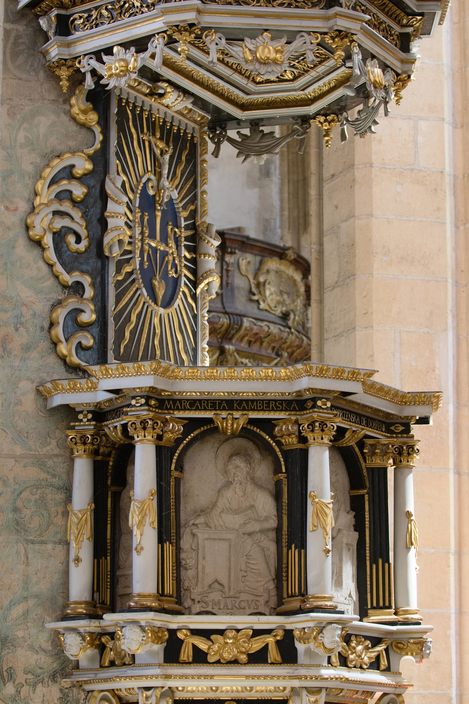
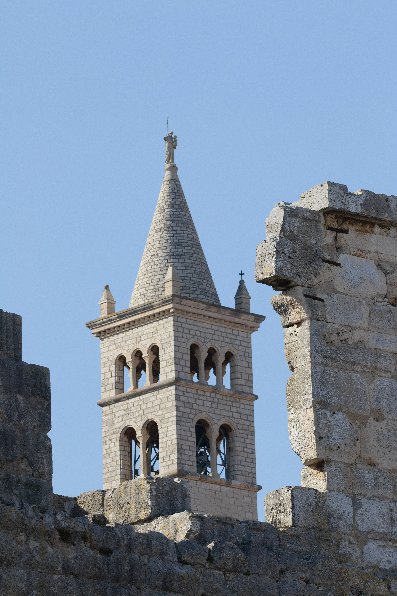
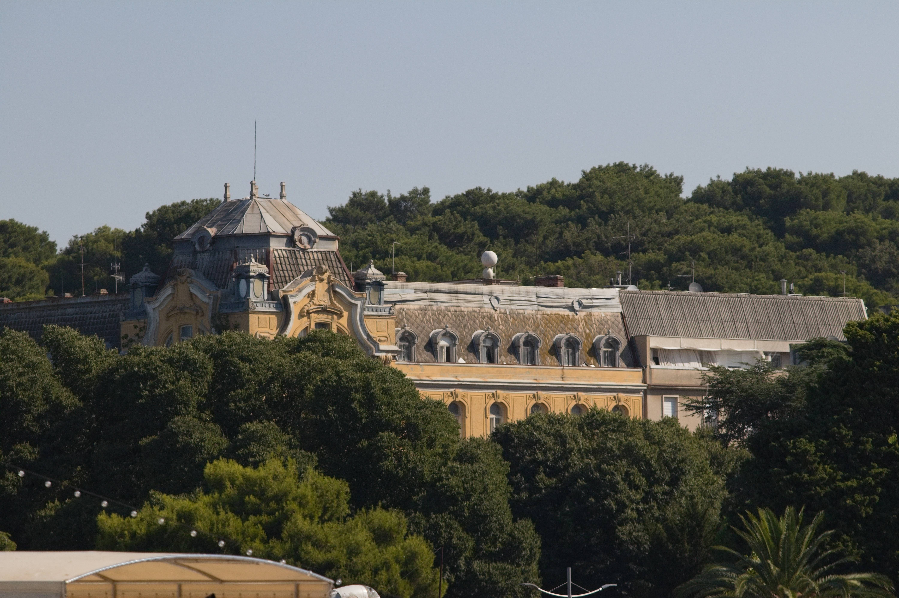

Foto_PRo_Art
Nejlepší budovy

Kazatelna v SV. Barboře

Slovinský radnice

Zamek ze slovinska
Tagliacozzo
Kopule v Římě
Kopule v Římě pt.2
Chrám sv. Barbory
Observatoř v Greenwichi
Tomova věž v Oxsvordu